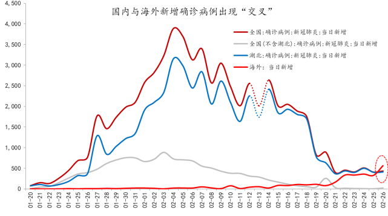
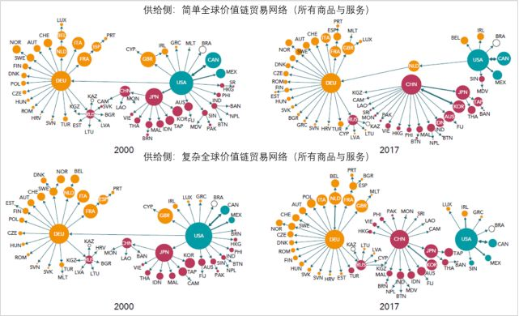
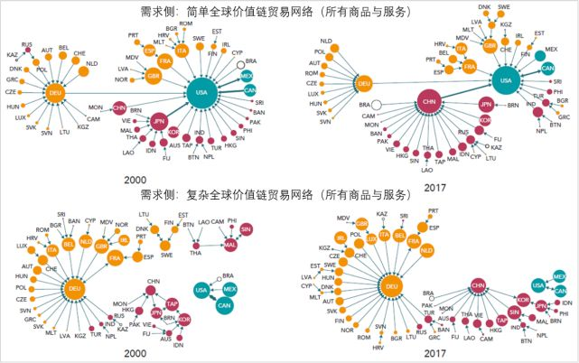
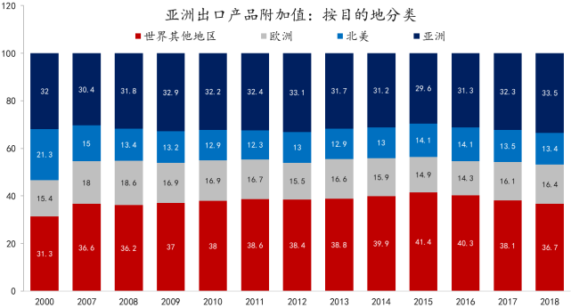
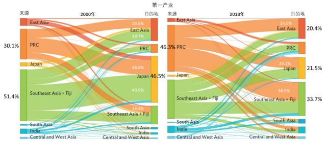
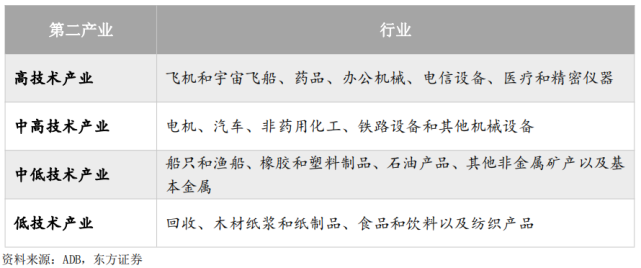

受疫情冲击资金无法维系，百程旅游关门清算
原文链接 备份链接 Photo by lucas law on Unsplash 记者 郑萃颖 “ 签证行业的恶性竞争，是导致百程无法坚持的主要原因，而新冠病毒疫情的爆发加速了这一进程，直接导致资金出现问题。 ” 2月29日上午，一张百程 …

文 | 邵宇 陈达飞 李志骞
中国在全球价值链中的地位显著提升，已成为亚洲价值链网络的中心。继2008年金融危机、中美贸易冲突之后，新型冠状肺炎疫情将继续对全球价值链形成负向冲击，中国、美国与德国作为三个核心国，其受冲击的程度将更为显著。
2月26日0至24时，全国新增确诊病例433例，2月24日除外，已连续5日位于500以内。其中，湖北409例，非湖北24例，较25日均有反弹，但2月10日开始的复工复产并未引发疫情的二次爆发。钟南山院士最新表态，认为有望在4月底控制住疫情的扩散。但就在国内疫情攻坚战胜利在望之际，海外疫情的形势却愈演愈烈（参考图1），尤其是韩国和日本；其次是意大利与伊朗；美国的风险正在逐步暴露，口罩等防护物资已出现短缺。2月26日，海外新增确诊病例首次超过国内（参考图2），这表明，未来一段时间，疫情在海外的扩散或将成为影响全球经济的主要因素。
图1：新冠肺炎疫情在海外的扩散：累计确诊病例

数据来源：WIND,东方证券
图2：国内外新增确诊病例出现“交叉”

数据来源：WIND,东方证券
说明：2月12和13日由于统计口径的调整而出现显著扰动，图中以均值插空法对其进行平滑处理。
截止2月26日24时，韩国累计确诊病例为1261例（截至2月27日14时已增至1595例），且仍在快速扩张阶段（随着检测范围扩大，确诊人数短期内还将增加）；日本累计确诊894例（“钻石公主号”游轮占比约75%），新增趋势虽所缓和，但部分原因在于检测范围有限，若疫情不能在短期内控制，或将影响2020年日本奥运会的举办；意大利累计确诊470例，过去4日，平均每日新增近100例；伊朗确诊95例（最新数据为139例）；美国方面，由于尚未扩大检测面积（截至2月24日，共检测429例），确诊病例数量仅为60例，但从美国疾控与预防中心人员的发言和特朗普在白宫的新闻发布会内容来看，形式不容乐观。2月27日最新消息显示，美国疾控中心已确认了一起社区集聚传播案例。
受疫情全球蔓延的影响，全球资本市场本周开盘便大幅下挫，道琼斯工业指数连续两日跌幅超过3%，纳斯达克指数过去4个交易日累计跌幅8.87%，日经指数与韩国综合指数也都出现了较大幅度的下跌。备受关注的是美国的情况，毕竟美国股市的估值处于历史高位。如果海外疫情继续扩散，引发各国采取高级别响应措施，那么，中国对外贸易的压力将从供给端的单边压力转为供给与需求双边承压，价值链首尾不能相顾，困难重重。
一方面，国内仍在有序复工复产，产能尚未恢复至常态水平，日韩位于价值链上游，疫情在日韩的扩散或影响中国中间产品的进口，进而影响最终品生产；另一方面，在国内需求尚未复苏的同时，疫情在海外的扩散也影响国外对中国出口品的需求。本次疫情是继中美贸易纠纷之后，再一次对中国在全球价值链（GVC）中的地位的压力测试。
三足鼎立的全球价值链格局
全球产业链“三足鼎立”格局已经形成，全球化向区域化转变，中国、美国和德国分别作为亚洲、美洲和欧洲的中心国，逐渐形成各自形成产业链“闭环”。
21世纪以来，基于全球价值链的产业分工和贸易发生了深刻的变化。一方面，商品贸易虽然仍是主体，但服务贸易（如ICT、知识产权、金融等），以及数字化产品的重要性越来越高。根据麦肯锡的统计，如果将数字服务、商品贸易中附带的服务以及跨国公司子公司的无形资产等都纳入服务的统计范畴的话，2017年全球的服务贸易增加值总量已经超过商品贸易增加值总量；另一方面，价值链格局的区域化趋势更加明显，一个突出的变化是中国在全球价值链分工的地位显著提升，取代了日本，而成为亚洲贸易中心（hub）。
图3至图4分别描述的是基于供给侧和需求侧全球产业链网络——中间品贸易的简单网络与复杂网络（一次跨境为简单网络，多次跨境为复杂网络）——的变迁，它基本可以代表全球贸易网络的密度。供给侧是指以主要生产国或出口国为核心，如果网络中大多数国家的大部分进口都来自某个国家，则将该国家作为供给侧的中心国（supply hub）。气泡大小代表该国的出口增加值在全球总出口增加值中所占的份额；每个贸易伙伴之间的增加值在总增加值中所占的比重由连线的粗细表示；箭头的方向表示增加值的流向；中国、美国和德国作为商品和服务的核心供给者，是外围国家主要的进口来源地，从而在全球贸易总增加值中所占的份额也最大。
从供给侧的演变来看，较为显著的变化出现在亚洲。从2000年到2017年，亚洲的中心国逐渐从日本变为中国，而且同样是作为中心国，日本与中国的地位也是有差异的，日本对美国的依存度更高，而中国在复杂产业链网络中与美国并未直接相连，与中国直接相连的国家数量超过美国，因为原来从美国进口的国家很多转向了中国，如日本和韩国等；复杂网络的全球价值链“闭环”特征更加明显。
图3：供给侧全球价值链网络

资料来源：Meng et al.,2018;OECD&WTO《全球价值链报告2019》
从需求侧的演变来看，2000年，从简单网络来看，全球的需求中心只有美国与德国，日本虽可以被看作是亚洲的中心，但仍有大量亚洲国家与美国直接相连，表明美国是这些国家的最主要出口目的地，而从复杂网络来看，德国的中心地位更显著，亚洲则呈现出一种“去中心的”结构。2017年，最明显的变化是中国确立了亚洲中间品需求的中心国地位，美国在简单网络与复杂网络中的中心地位有显著差异，在复杂网络中，美国仅与加拿大和墨西哥相连。
图4：需求侧全球价值链网络

资料来源：Meng et al.,2018;OECD&WTO《全球价值链报告2019》
从信息与通信技术（ICT）行业来看。图5为供给侧的演变，可以看出，从2000年到2017年，ICT的网络拓扑结构发生了巨大变化。2017年中国取代日本，成为简单和复杂GVC网络的全球ICT供应中心。而且可以看出，在三个中心当中，中国分别于德国和美国直接相连，但箭头的指向都是从中国出发的，这表明，在ICT行业，中国是德国和美国的重要增加值来源国，也即中国是德国与美国ICT产品的重要出口目的地。而且，从连线的粗细来看，中国对美国的贡献更大。
就亚洲的情况来看，日本在ICT供应网络中的地位显著下降，其在2000年贸易网络中的中心地位分散至包括中国、韩国和中国台湾在内的其他国家。当然，中国ICT产品出口的一半以上份额仍由外资在华企业生产。
图5：供给侧全球价值链网络（信息与通信部门）

资料来源：Meng et al.,2018;OECD&WTO《全球价值链报告2019》
以中国为中心的亚洲价值链格局
下文用前向关联所产生的国内增加值（DVA_F）来衡量一国经由出口所产生的国内增值。图6分别从出口与进口两个维度展示了2000年至2018年亚洲DVA_F的变化，可以看出，亚洲在全球价值链中的份额不断增加，而且，出口增加值的份额要显著高于进口增加值份额。出口增加值份额从2000年的23%增长到2018年的30.2%；同期，进口增加值份额从19.7%增长到26%。
图6：亚洲在全球贸易增加值中的份额

数据来源：ADB，东方证券
图7和图8分别从出口目的地和进口来源地对增加值的结构进行了拆解。从图7可以看出，亚洲自身的贡献率约为三分之一，且比较稳定，基本维持在在30%到34%之间。较为显著的变出出现在北美和世界其他地区，前者份额从21.3%降至13.4%，降幅约8个百分点；后者份额从31.3%提高到36.7%，增加了5.4个百分点。欧洲的份额比较稳定。这表明，从出口目的地和增加值的贡献角度来说，相对而言，北美对于亚洲的影响在下降。
图7：亚洲出口产品附加值（按出口目的地分类）

数据来源：ADB，东方证券
从进口附加值的角度来说，也能得到相同的结论。图7显示了出口到亚洲（也即亚洲进口）的产品的国内增加值的分配，其意思是，在世界各地经由出口所产生的国内增加值中，亚洲贡献了多大的份额。可以看出，亚洲自身的份额也比较稳定，但相比较于出口增加值，进口增加值的份额更高，在2018年达到了39%。世界其他地区的份额仅次于亚洲自身，从2000年的31.1%增加到2018年的37%；欧洲的出口增加值比较稳定，约为15%。北美的份额减半，从2000年的16.6%下降到2018年的8.6%。
图8：亚洲进口产品附加值（按出口来源地分类）

数据来源：ADB，东方证券
综合来说，亚洲在全球价值链中的地位在不断提升，结合上下文来看，作为亚洲价值链的核心，中国在其中的贡献度较高；分进出口来看，亚洲在全球出口增加值中的份额高于进口；分区域来看，亚洲是其自身增加值的最重要贡献者，除美国和欧洲以外的其他地区的贡献度上升，美国的在亚洲的进口与出口增加值中的份额都显著下降。对中国而言，区域价值链的地位，以及区域贸易的重要性，优先级更高。
亚洲价值链网络
亚洲内部的价值链网络可以由区域内DVA_F的来源和目的地的动态变化来反映。图9至图13从区域内商品与服务贸易总体和结构上说明了区域内价值链分工，包括四个子区域——中亚和西亚、东亚、南亚、东南亚（包括斐济）和中国、日本、印度三个国家。“来源”与“目的地”的节点长度表示某一区域（或一国）在亚洲的增加值的份额，连接弧的厚度表示其与另一区域（或一国）在价值链分配上的关系。
图9从总体上描述了亚洲出口增加值的来源与目的地及其结构，左图为2000年的情况，右图为2018年的情况。可以看出，在2000年，日本占亚洲出口增加值的份额最大，为35.6%。其中，46.1％是由东亚贡献的，33.3％来自东南亚（和斐济），17.4％来自中国。东亚和东南亚（和斐济）仅次于日本之后，在亚洲出口增加值中的占比分别为23.5％和21.3％。
图9：亚洲出口增加值的来源与目的地（所有商品和服务）

数据来源：ADB，东方证券
2018年，亚洲价值链网络结构发生了显著变化。如前文所述，中国替代了日本，成为亚洲价值链的中心国，占亚洲出口增加值中的份额三分之一（34.4％），而日本的份额从2000年的35.6%降至2018年的16.8%。
第一产业方面。在2000年，东南亚（包括斐济）占比最高，为51.4%，其中，近一半是由日本贡献的（即51.4%中的25%），到2018年，该比例显著下降；中国的占比则从2000年的30.1%升至2018年的46.3%，东南亚、东亚和日本分别贡献了其中的38.5%、26.5%和23.1%；日本在亚洲第一产业出口增加值中的比重非常小，其在出口目的地中的份额相对较高。（参考图10）
图10：亚洲出口增加值的来源与目的地（第一产业）

数据来源：ADB，东方证券
低技术工业品。2000年，低技术工业品出口增加值份额的分配比较均匀，中国最高，为27.8%，仅高于日本0.4个百分点；日本为最重要的进口国，在亚洲的贡献率为31.5%，而且，是中国增加值的主要贡献者。到2018年，结构出现了较显著的变化，中国的份额提升至42.2%，东南亚升值24.8%，而日本和东亚都显著下降。而且，东南亚也成为最重要的进口区域。（参考图11，低技术行业工业品分类见附表）
图11：亚洲出口增加值的来源与目的地（第二产业低技术密集商品）

数据来源：ADB，东方证券
中/高技术工业品。与低技术工业品相比较，在中/高技术工业品出口价值链网络中，结构有显著差异。第一，从2000年到2018年，日本的份额虽然显著下降，但占比仍为22.4%（2000年为45.3%），在亚洲名列第三，仅次于东亚和中国，但比中国仅低6个百分点；第二，中国的份额显著提升，之2018年，已升至28.8%，但是，其份额优势并没有低技术工业品那么显著（42.2%）。中国高技术工业品的出口较为分散，东亚、日本和东南亚占比相当，占总份额的约80%；第三，东亚在亚洲高技术工业品的出口份额约三分之一，显著高于其在低技术工业品中的增加值占比。（参考图12）
图12：亚洲出口增加值的来源与目的地（第二产业中-高技术密集商品）

商业服务业。商业服务业的价值链网络的变化与第一和第二产业有诸多共同点。日本所占增加值份额显著下降，中国的份额显著提升。到2018年，中国所占份额增至33.8%，其次是东南亚，占比为21.3%。（参考图13）
图13：亚洲出口增加值的来源与目的地（商业服务部门）

说明：商业服务部门:汽车及电单车的销售、保养及修理;汽车及电单车除外的零售贸易;家居维修;酒店和餐厅;内陆运输;水路运输;航空运输;其他辅助运输活动;旅行社活动;邮电通信;金融中介;房地产活动;机器设备租赁;以及其他商业活动。
图9-13采用的是前向参与度指标，还可以用后向参与度做类似分析。基于对外经贸大学全球价值链数据库（UIBE GVC Index）的分析表明，中国整体行业后向参与度远高于前向参与度；中国整体行业参与GVC分工的位置居于下游；制造业GVC 参与度更深,而服务业GVC分工位置更高；高技术行业的GVC参与度和位置都高于中低技术行业,光电设备等高技术行业前向参与度有所提高。（赵玉焕等，2019）在不同行业、不同技术密集度产品价值链网络中的不同角色，对就业乃至整个国民经济都有不同的含义，比如：后向参与度的提高会对就业产生负面影响；一次跨境的简单GVC对就业的正向拉动作用最大；相对于服务业与中低技术行业,制造业与高技术行业位置的提高将促进就业；服务业前向GVC复杂生产长度以及整体与细分行业的简单GVC都与就业正相关。
加入WTO以来，中国在全球价值链中的地位显著提升，已成为亚洲价值链网络的中心。继2008年金融危机、中美贸易冲突之后，新型冠状肺炎疫情将继续对全球价值链形成负向冲击，中国、美国与德国作为三个核心国，其受冲击的程度将更为显著。摩根士丹利对此其作了压力测试，认为如果3月下旬之前生产链全部复工，全球产业链受到的冲击还可控，而如果持续到第2季度，那么冲击可能会超出市场预期。从微观的证据来看，疫情在意大利的扩散已经导致一家汽车配件厂商（MTA）被隔离，这将影响到欧洲的汽车产业链，而且也将影响到中国。
所以，就国内而言，当务之急自然是尽快控制住疫情，与此同时有序复工复产。但海外的风险是中国无法控制的，政策当局能做的是避免疫情扩散出现“回马枪”——由海外回流中国，故应该加强对对机场的卫生检查，对于重点国家游客，应采取与国内同样级别的防控措施。考虑到海外疫情扩散对中国的负向溢出效应，在防控疫情方面，中国也需加强同国外和世卫组织的合作，提供必要的协助，如提供检测试剂等。
附表：
表1：第二产业按技术层次的分类

资料来源：ADB，东方证券
邵宇为东方证券首席经济学家；陈达飞为东方证券宏观分析师；李志骞为东方证券博士后；编辑：苏琦。

▲点击图片查看更多疫情报道
责编 | 黄端 duanhuang@caijing.com.cn
本文为《财经》杂志原创文章，未经授权不得转载或建立镜像。如需转载，请在文末留言申请并获取授权。
原文链接 备份链接 Photo by lucas law on Unsplash 记者 郑萃颖 “ 签证行业的恶性竞争，是导致百程无法坚持的主要原因，而新冠病毒疫情的爆发加速了这一进程，直接导致资金出现问题。 ” 2月29日上午，一张百程 …
原文链接 备份链接 作者：冯超 来源：*商业人物*（ID：*biz-leaders）* 壹 中国人知道了一种病毒，也知道了一个发布数据，名为“卫生健康委员会”的机构。该机构简称就是卫健委。 各级的卫生健康委员会是从各级卫生计生委（局）改 …
原文链接 备份链接 记者：陈晓双 “ 陈峰曾表示，2020年是海航化解流动性风险的决胜之年。不过对于尾大不掉的海航而言，面对庞大的负债，资产处置和回归主业都显得举步维艰。 ” 新冠病毒肺炎疫情短期内对民航业产生巨大冲击。 民航局副局长李健 …
原文链接 备份链接 “ 经调查，韩红基金会自成立以来，总体上运作比较规范，但也发现部分投资事项公开不及时，在未取得公开募捐资格前有公开募捐行为。现已要求韩红基金会限期改正，依法规范运作。 ” 2月13日，我局收到微博账户司马3忌发来的举报 …
原文链接 备份链接 图片来源：pexels 记者：肖恩 “ 对一些韩国人来说，强制“减负”后加班工资也跟着缩水了，中小企业的劳动力成本压力也随着劳动时间减少而不断增加，导致就业岗位减少。 ” 对上班族来说，工作时间越少越好？韩国人会告诉 …